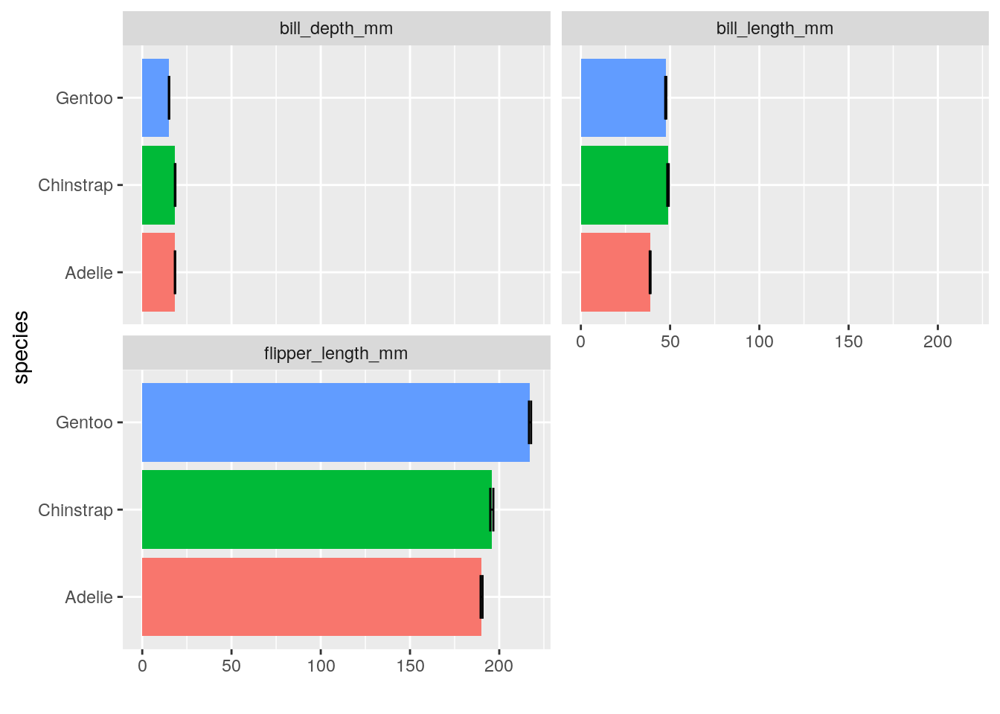
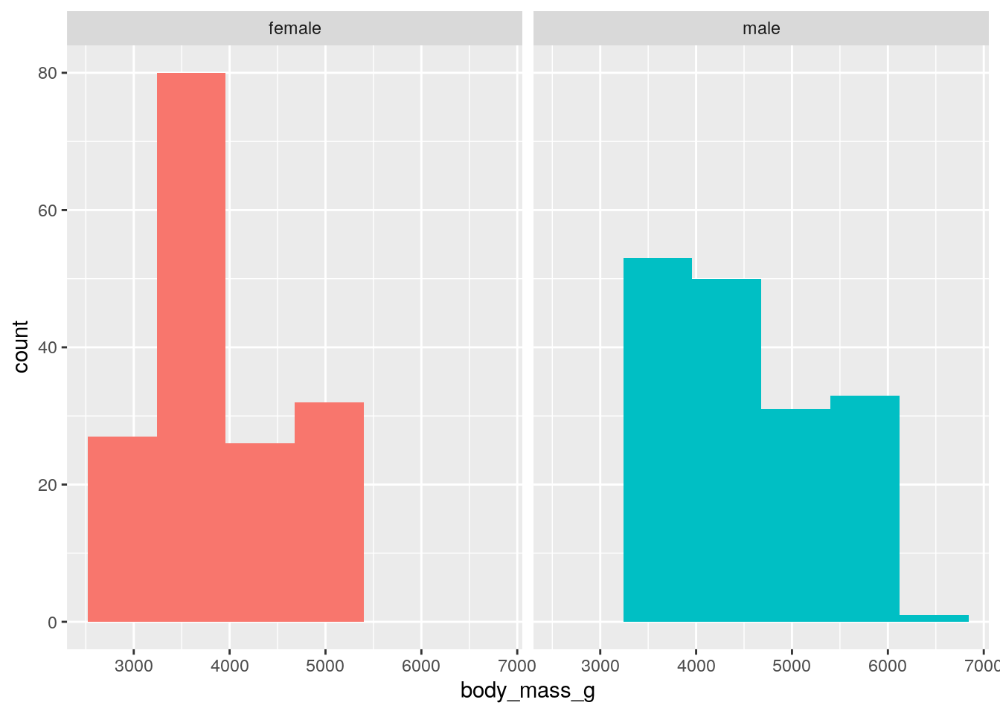
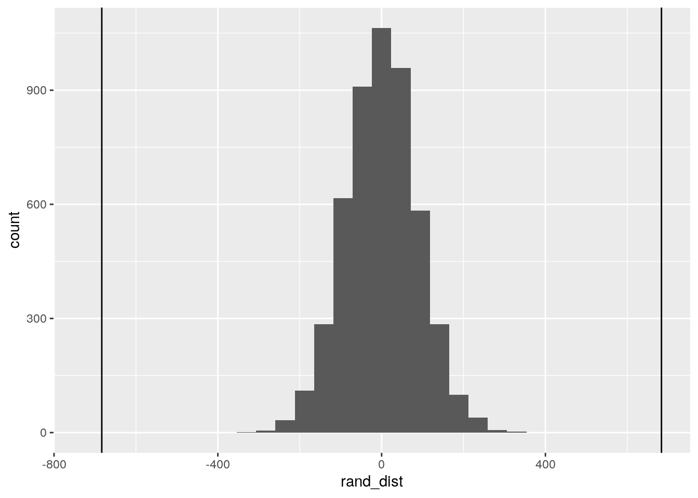
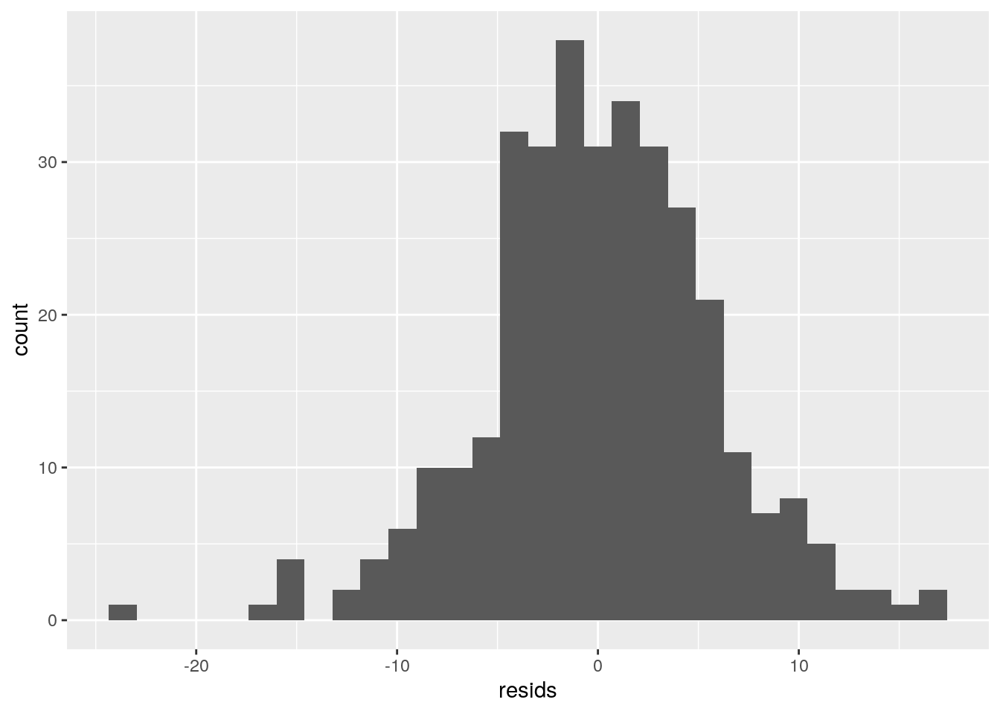
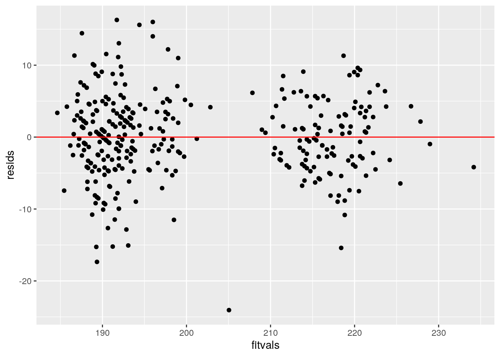
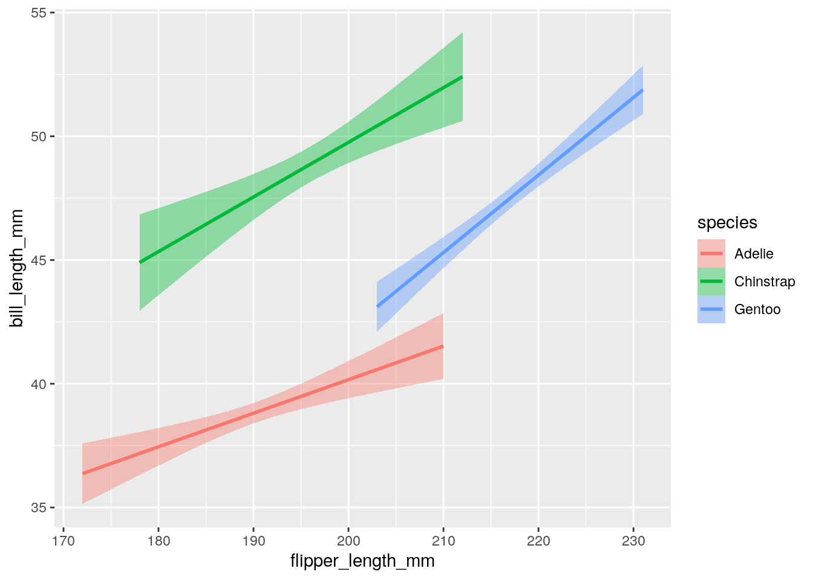
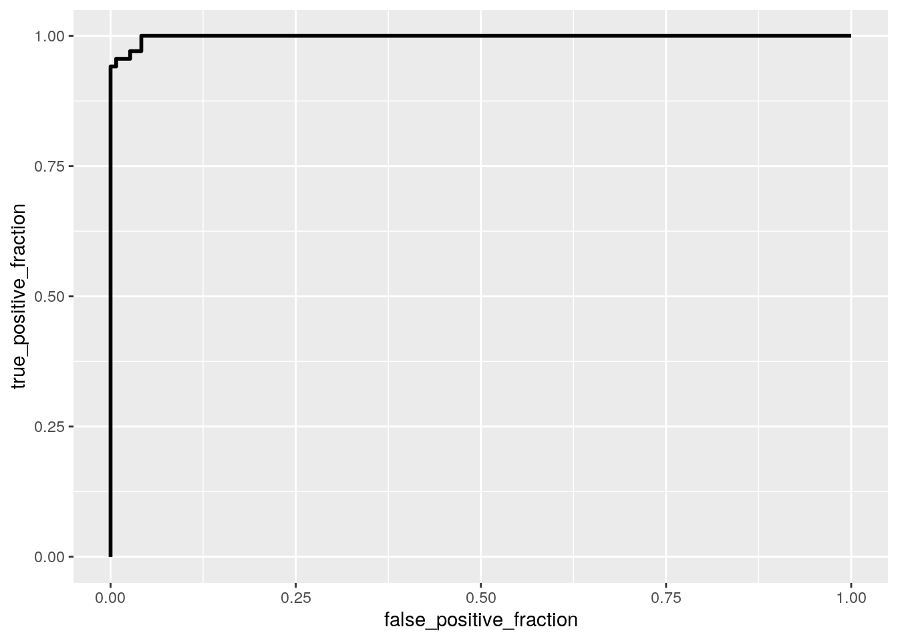
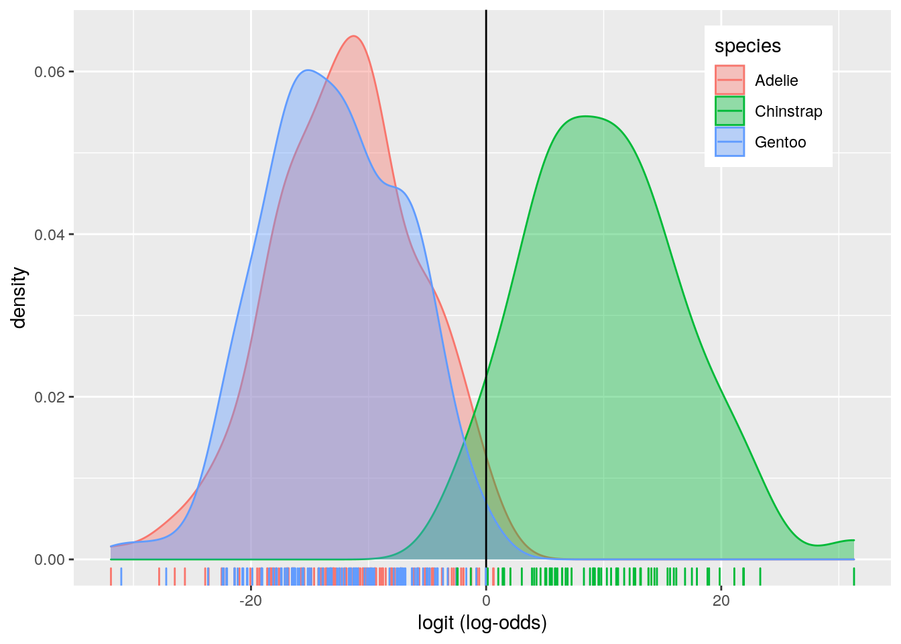

library(tidyverse)
library(sandwich)
library(lmtest)
library(plotROC)
library(pROC)
penguins <- read_csv("penguins.csv")The penguins dataset compares body features and islands occupied by different adult foraging penguin species near Palmer Station, Antarctica. Species variable has the 3 penguins being analyzed, Adelie, Gentoo and Chinstrap. Island variable records the island that each penguin lives in. Flipper length, bill length, bill depth are measured in millimeters and body mass is measured in g. The sex of each penguin is also recorded.
penguins <- penguins %>% na.omit() %>% as.data.frame()
songoffire <- penguins %>% select(-X1, -year)
library(rstatix)
group <- penguins$species
DVs <- penguins %>% select(bill_length_mm, bill_depth_mm, flipper_length_mm,
body_mass_g)
# Test multivariate normality for each group (null:
# assumption met)
sapply(split(DVs, group), mshapiro_test)## Adelie Chinstrap Gentoo
## statistic 0.9807567 0.867902 0.9756563
## p.value 0.03816471 3.417835e-06 0.02935132# MANOVA
songofice <- manova(cbind(bill_length_mm, bill_depth_mm, flipper_length_mm,
body_mass_g) ~ species, data = songoffire)
summary(songofice)## Df Pillai approx F num Df den Df Pr(>F)
## species 2 1.6379 370.89 8 656 < 2.2e-16 ***
## Residuals 330
## ---
## Signif. codes: 0 '***' 0.001 '**' 0.01 '*' 0.05 '.' 0.1 ' ' 1The manova test was conducted to determine the effect of penguin species, Gentoo, Adelie and Chinstrap on the dependent variables, bill length, bill depth, flipper length, and body mass. The Shapiro-Wilk test to asses multivariate normality has p-values less than 0.05 for each species and therefore, the assumption of multiavariate normality was violated in the process of conducting the MANOVA test. The null hypothesis for the test: For each response variable (bill length, bill depth, flipper length, and body mass), the means of all species are equal. The alternate hypothesis: For atleast 1 response variables, atleast 1 species mean differs. Significant differences were found among the three species for atleast one of the depenedent variables, therefore the null hypothesis is rejected (Pillai trace = 1.638, pseudo F(8,656) = 370.89, p < 0.0001).
# Univariate ANOVAs
summary.aov(songofice)## Response bill_length_mm :
## Df Sum Sq Mean Sq F value Pr(>F)
## species 2 7015.4 3507.7 397.3 < 2.2e-16 ***
## Residuals 330 2913.5 8.8
## ---
## Signif. codes: 0 '***' 0.001 '**' 0.01 '*' 0.05 '.' 0.1 ' ' 1
##
## Response bill_depth_mm :
## Df Sum Sq Mean Sq F value Pr(>F)
## species 2 870.79 435.39 344.83 < 2.2e-16 ***
## Residuals 330 416.67 1.26
## ---
## Signif. codes: 0 '***' 0.001 '**' 0.01 '*' 0.05 '.' 0.1 ' ' 1
##
## Response flipper_length_mm :
## Df Sum Sq Mean Sq F value Pr(>F)
## species 2 50526 25262.9 567.41 < 2.2e-16 ***
## Residuals 330 14693 44.5
## ---
## Signif. codes: 0 '***' 0.001 '**' 0.01 '*' 0.05 '.' 0.1 ' ' 1
##
## Response body_mass_g :
## Df Sum Sq Mean Sq F value Pr(>F)
## species 2 145190219 72595110 341.89 < 2.2e-16 ***
## Residuals 330 70069447 212332
## ---
## Signif. codes: 0 '***' 0.001 '**' 0.01 '*' 0.05 '.' 0.1 ' ' 1# mean of each response variable by species
penguins %>% group_by(species) %>% summarize(mean(bill_length_mm),
mean(bill_depth_mm), mean(flipper_length_mm), mean(body_mass_g))## # A tibble: 3 x 5
## species `mean(bill_lengt… `mean(bill_dept… `mean(flipper_le… `mean(body_mass…
## <chr> <dbl> <dbl> <dbl> <dbl>
## 1 Adelie 38.8 18.3 190. 3706.
## 2 Chinstr… 48.8 18.4 196. 3733.
## 3 Gentoo 47.6 15.0 217. 5092.# Post-hoc t-tests
pairwise.t.test(penguins$bill_length_mm, penguins$species, p.adj = "none")##
## Pairwise comparisons using t tests with pooled SD
##
## data: penguins$bill_length_mm and penguins$species
##
## Adelie Chinstrap
## Chinstrap <2e-16 -
## Gentoo <2e-16 0.0054
##
## P value adjustment method: nonepairwise.t.test(penguins$bill_depth_mm, penguins$species, p.adj = "none")##
## Pairwise comparisons using t tests with pooled SD
##
## data: penguins$bill_depth_mm and penguins$species
##
## Adelie Chinstrap
## Chinstrap 0.66 -
## Gentoo <2e-16 <2e-16
##
## P value adjustment method: nonepairwise.t.test(penguins$flipper_length_mm, penguins$species,
p.adj = "none")##
## Pairwise comparisons using t tests with pooled SD
##
## data: penguins$flipper_length_mm and penguins$species
##
## Adelie Chinstrap
## Chinstrap 1.3e-08 -
## Gentoo < 2e-16 < 2e-16
##
## P value adjustment method: nonepairwise.t.test(penguins$body_mass_g, penguins$species, p.adj = "none")##
## Pairwise comparisons using t tests with pooled SD
##
## data: penguins$body_mass_g and penguins$species
##
## Adelie Chinstrap
## Chinstrap 0.69 -
## Gentoo <2e-16 <2e-16
##
## P value adjustment method: nonepenguins %>% select(species, bill_length_mm, bill_depth_mm, flipper_length_mm) %>%
pivot_longer(-1, names_to = "DV", values_to = "measure") %>%
ggplot(aes(species, measure, fill = species)) + geom_bar(stat = "summary") +
geom_errorbar(stat = "summary", width = 0.5) + facet_wrap(~DV,
nrow = 2) + coord_flip() + ylab("") + theme(legend.position = "none")
Univariate ANOVAs for each dependent variable were conducted as follow-up tests to the MANOVA using the Bonferroni method for controlling Type I error rates for multiple comparisons. Post hoc analysis was performed conducting pairwise comparisons to determine which Species differed in bill length, bill depth, flipper length, and body mass. In total, 17 tests were done, 1 MANOVA, 4 Univariate ANOVAs, 12 post=hoc t-tests. The probability of type I error was then calculated to be 0.582. The Bonferroni correction is then 0.05/17 = 0.00294. All species were found to differ significantly from each other, except Chinstrap and Gentoo penguins in bill length (p = 0.0054), Chinstrap and Adelie in bill (p = 0.66), and Chinstrap and Adelie in body mass (p = 0.69).
set.seed(348)
# mean of each numeric variable
penguins %>% group_by(sex) %>% summarize(mean(bill_length_mm),
mean(bill_depth_mm), mean(flipper_length_mm), mean(body_mass_g))## # A tibble: 2 x 5
## sex `mean(bill_length… `mean(bill_depth… `mean(flipper_le… `mean(body_mass…
## <chr> <dbl> <dbl> <dbl> <dbl>
## 1 female 42.1 16.4 197. 3862.
## 2 male 45.9 17.9 205. 4546.ggplot(penguins, aes(body_mass_g, fill = sex)) + geom_histogram(bins = 6.5) +
facet_wrap(~sex, ncol = 2) + theme(legend.position = "none")
# mean differences
penguins %>% group_by(sex) %>% summarize(means = mean(body_mass_g)) %>%
summarize(mean_diff = diff(means))## # A tibble: 1 x 1
## mean_diff
## <dbl>
## 1 683.# Randomization for mean differences
rand_dist <- vector()
for (i in 1:5000) {
new <- data.frame(body_mass_g = sample(penguins$body_mass_g),
sex = penguins$sex)
rand_dist[i] <- mean(new[new$sex == "male", ]$body_mass_g) -
mean(new[new$sex == "female", ]$body_mass_g)
}
ggplot() + geom_histogram(aes(rand_dist)) + geom_vline(xintercept = c(-683.412,
683.412))
# two-tailed p value
mean(rand_dist > 683.412 | rand_dist < -683.412)## [1] 0A randomization test to calculate mean differences in body mass between the two sexes was done. The null hypothesis is: the means of body mass between the two sexes are equal, there is no association between the sexes on body mass. The alternate hypothesis is: the difference in means is not equal to 0. The test statsitic is the mean difference between male and female body mass which is equal to 683.412g. The males were 683.412g heavier than the females on average. The probability of getting a mean difference as extreme as the one we got if there was truly no difference between males and females on body mass is 0. The p-value of 0 means that the difference is likely not due to chance.
# mean centering
mean(penguins$bill_length_mm, na.rm = T)## [1] 43.99279penguins$bill_length_mm_c <- penguins$bill_length_mm - mean(penguins$bill_length_mm,
na.rm = T)
mean(penguins$bill_length_mm_c, na.rm = T)## [1] 1.940752e-15# Linear regression
wilding <- lm(flipper_length_mm ~ species * bill_length_mm_c,
data = penguins)
summary(wilding)##
## Call:
## lm(formula = flipper_length_mm ~ species * bill_length_mm_c,
## data = penguins)
##
## Residuals:
## Min 1Q Median 3Q Max
## -24.0561 -3.2927 -0.1646 3.5212 16.2890
##
## Coefficients:
## Estimate Std. Error t value Pr(>|t|)
## (Intercept) 194.3095 1.0509 184.906 < 2e-16 ***
## speciesChinstrap -3.3621 1.6290 -2.064 0.0398 *
## speciesGentoo 17.8910 1.3283 13.469 < 2e-16 ***
## bill_length_mm_c 0.8139 0.1809 4.500 9.46e-06 ***
## speciesChinstrap:bill_length_mm_c 0.1934 0.2788 0.694 0.4884
## speciesGentoo:bill_length_mm_c 0.5943 0.2495 2.382 0.0178 *
## ---
## Signif. codes: 0 '***' 0.001 '**' 0.01 '*' 0.05 '.' 0.1 ' ' 1
##
## Residual standard error: 5.799 on 327 degrees of freedom
## Multiple R-squared: 0.8314, Adjusted R-squared: 0.8288
## F-statistic: 322.5 on 5 and 327 DF, p-value: < 2.2e-16194.310mm is the average flipper length for Adelie species with average bill length. Chinstrap species have average flipper length that is 3.362 times lesser than Adelie species with average bill length. Gentoo species have average flipper length that 17.891 times greater than Adelie with average bill length. For every 1mm increase in bill length, predcited flipper length goes up by 0.814mm for Adelie species. The slope for bill length on flipper length is 0.193 times higher for Chinstrap penguins compared to Adelie penguins. The slope for bill length on flipper length is 0.594 times higher for Gentoo penguins compared to Adelie penguins.
# Normality
resids <- lm(flipper_length_mm ~ species * bill_length_mm_c,
data = penguins)$residuals
fitted <- lm(flipper_length_mm ~ species * bill_length_mm_c,
data = penguins)$fitted.value
ggplot() + geom_histogram(aes(resids, bin = 10))
shapiro.test(resids)##
## Shapiro-Wilk normality test
##
## data: resids
## W = 0.98862, p-value = 0.0105# homoskedasticity
bptest(wilding)##
## studentized Breusch-Pagan test
##
## data: wilding
## BP = 15.031, df = 5, p-value = 0.01023# Linearity
resids <- wilding$residuals
fitvals <- wilding$fitted.values
ggplot() + geom_point(aes(fitvals, resids)) + geom_hline(yintercept = 0,
color = "red")
penguins %>% ggplot(aes(flipper_length_mm, bill_length_mm, fill = species,
color = species)) + geom_smooth(method = "lm") The graph of residuals vs. fitted values shows that the linearity and homoskedasticity assumptions are not met as variance is not constant and two groups can be seen. Additionally, the bp test also has a p-value less than 0.05 which indicates that the null hypothesis that the true distribution is homoskedasticitic is rejected, thereby violating the homoskedasticty assumption as well. The histogram of residuals show a wooly normal distribution. However, the shapiro-Wilk test has a p-value less than 0.05 which indicates that the null hypothesis that the true distribution is normal is rejected, thereby violating the normality assumption as well.
# Robust Standard errors regression
coeftest(wilding, vcov = vcovHC(wilding))##
## t test of coefficients:
##
## Estimate Std. Error t value Pr(>|t|)
## (Intercept) 194.30954 1.11298 174.5845 < 2.2e-16 ***
## speciesChinstrap -3.36212 2.03123 -1.6552 0.098841 .
## speciesGentoo 17.89100 1.26632 14.1283 < 2.2e-16 ***
## bill_length_mm_c 0.81388 0.17878 4.5524 7.491e-06 ***
## speciesChinstrap:bill_length_mm_c 0.19337 0.42426 0.4558 0.648855
## speciesGentoo:bill_length_mm_c 0.59434 0.22233 2.6732 0.007891 **
## ---
## Signif. codes: 0 '***' 0.001 '**' 0.01 '*' 0.05 '.' 0.1 ' ' 1Adelie, Chinstrap and Gentoo penguins, bill length and the interactions between Gentoo penguins and bill length are significant predictors of flipper length (p < 0.05) from the linear regression. The regression using robust standard errors changed only the significance of Chinstrap penguins by increasing its p value greater than 0.05. Accordingly, the robust standard error for Chinstrap penguins is higher than the normal standard error. The robust standard error for the interaction between Chinstrap penguins and bill length increased comapred to the normal standard error for the interaction between Chinstrap penguins and bill length and it's p-value also increased but remained non-significant. The other robust standard errors decreased but maintained its significance value as before. The adjusted R square value, 0.8314 explains the proprtion of varitaion in the outcome.
# repeat 5000 times
nymeria <- replicate(5000, {
boot_dat <- sample_frac(penguins, replace = T) #take bootstrap sample of rows
fit <- lm(flipper_length_mm ~ species * bill_length_mm_c,
data = boot_dat) #fit model on bootstrap sample
coef(fit) #save coefs
})
## Estimated SEs
nymeria %>% t %>% as.data.frame %>% summarize_all(sd)## (Intercept) speciesChinstrap speciesGentoo bill_length_mm_c
## 1 1.086262 1.904173 1.241838 0.1742912
## speciesChinstrap:bill_length_mm_c speciesGentoo:bill_length_mm_c
## 1 0.3837949 0.2195745# 95% Confidence Interval
nymeria %>% t %>% as.data.frame %>% pivot_longer(1:6) %>% group_by(name) %>%
summarize(lower = quantile(value, 0.025), upper = quantile(value,
0.975))## # A tibble: 6 x 3
## name lower upper
## <chr> <dbl> <dbl>
## 1 (Intercept) 192. 196.
## 2 bill_length_mm_c 0.480 1.17
## 3 speciesChinstrap -7.00 0.444
## 4 speciesChinstrap:bill_length_mm_c -0.563 0.920
## 5 speciesGentoo 15.4 20.4
## 6 speciesGentoo:bill_length_mm_c 0.180 1.02The standard error for Chinstrap penguins of 1.629 increased to a robust standard error of 2.031 and decreased to a bootstrapped standard error of 1.936. The standard error for the interaction between Chinstrap penguins and bill length of 0.279 increased to a robust standard error of 0.424 and decreased to a bootstrapped standard error of 0.389. The standard errors for Gentoo penguins, bill length and the interaction between Gentoo penguins and bill length stayed relatively same across all the regression models, with a slight decrease in robust and bootstrapped standard errors.
The 95% confidence interval shows the Adelie penguins, Gentoo penguins, bill length and the interaction between Gentoo penguins and bill length are significant predictors for flipper length similar to the results obtained via robust standard errors. Since we're 95% sure that each of these coefficients are covered by the shown interval and 0 is not covered by the interval, it is significant.
# Logistic Regression
pen_grins <- penguins %>% mutate(y = ifelse(species == "Chinstrap",
1, 0))
ghost <- glm(y ~ bill_length_mm + body_mass_g, data = pen_grins,
family = binomial(link = "logit"))
summary(ghost)##
## Call:
## glm(formula = y ~ bill_length_mm + body_mass_g, family = binomial(link = "logit"),
## data = pen_grins)
##
## Deviance Residuals:
## Min 1Q Median 3Q Max
## -1.46100 -0.01125 -0.00112 -0.00002 2.26001
##
## Coefficients:
## Estimate Std. Error z value Pr(>|z|)
## (Intercept) -44.586104 11.337038 -3.933 8.40e-05 ***
## bill_length_mm 2.256686 0.571313 3.950 7.82e-05 ***
## body_mass_g -0.014866 0.003816 -3.896 9.78e-05 ***
## ---
## Signif. codes: 0 '***' 0.001 '**' 0.01 '*' 0.05 '.' 0.1 ' ' 1
##
## (Dispersion parameter for binomial family taken to be 1)
##
## Null deviance: 337.113 on 332 degrees of freedom
## Residual deviance: 27.712 on 330 degrees of freedom
## AIC: 33.712
##
## Number of Fisher Scoring iterations: 10exp(coef(ghost))## (Intercept) bill_length_mm body_mass_g
## 4.330130e-20 9.551386e+00 9.852439e-01The odds of being a Chinstrap with having 0 bill length and 0 body mass is 4.330e-20. Controlling for body mass, for every 1 mm increase in bill length, the odds of being a chinstrap penguin increase by a factor of 9.551. Controlling for bill length, for every 1g increase in body mass, the odds of being a chinstrap penguin increase by a factor of 9.852e-1.
# Confusion Matrix
pen_grins$prob <- predict(ghost, type = "response")
pen_grins$predicted <- ifelse(pen_grins$prob > 0.5, "1", "0")
table(prediction = pen_grins$predicted, truth = ghost$y) %>%
addmargins## truth
## prediction 0 1 Sum
## 0 263 3 266
## 1 2 65 67
## Sum 265 68 333The truth value is 68 Chinstrap penguins and 265 non-chinstrap penguins. Our model predicts 67 Chinstrap penguins and 266 non-Chinstrap penguins. The true positives are 65 and the true negatives are 263. 3 penguins were Chinstrap penguins, but the model predicted them as non-Chinstrap and are false negatives. There were 2 non-Chinstrap penguins that the model predicted as Chinstrap penguins, which are the false negatives.
# Roc Curve
response <- ghost$y
predictor <- predict(ghost, type = "response")
ROCplot <- ggplot(ghost) + geom_roc(aes(d = y, m = predictor),
n.cuts = 0)
ROCplot
calc_auc(ROCplot)## PANEL group AUC
## 1 1 -1 0.9982797# THE CLASSIFICAITON DIAGNOSTICS FUNCTION
class_diag <- function(probs, truth) {
tab <- table(factor(probs > 0.5, levels = c("FALSE", "TRUE")),
truth)
acc = sum(diag(tab))/sum(tab)
sens = tab[2, 2]/colSums(tab)[2]
spec = tab[1, 1]/colSums(tab)[1]
ppv = tab[2, 2]/rowSums(tab)[2]
f1 = 2 * (sens * ppv)/(sens + ppv)
if (is.numeric(truth) == FALSE & is.logical(truth) == FALSE) {
truth <- as.numeric(truth) - 1
}
# CALCULATE EXACT AUC
ord <- order(probs, decreasing = TRUE)
probs <- probs[ord]
truth <- truth[ord]
TPR = cumsum(truth)/max(1, sum(truth))
FPR = cumsum(!truth)/max(1, sum(!truth))
dup <- c(probs[-1] >= probs[-length(probs)], FALSE)
TPR <- c(0, TPR[!dup], 1)
FPR <- c(0, FPR[!dup], 1)
n <- length(TPR)
auc <- sum(((TPR[-1] + TPR[-n])/2) * (FPR[-1] - FPR[-n]))
data.frame(acc, sens, spec, ppv, f1, auc)
}
class_diag(pen_grins$prob, pen_grins$y)## acc sens spec ppv f1 auc
## 1 0.984985 0.9558824 0.9924528 0.9701493 0.962963 0.9982797The model has an auc value of 0.998, which is the probability that a randomly selected penguin of Chinstrap species has a higher predicted probability than a randomly selected non-Chinstrap penguin. The accuracy, sensitivity, specificity and precision are also very close to 1. The sensitivity was 0.956 which is the probabilty of predicting a penguin to be chinstrap if it actually is a Chinstrap penguin. The specificity is 0.992 which is the probability of identifying a penguin to be non-Chinstrap when it isn't actually a Chinstrap penguin. The precision is 0.970 which is the proportion classified as Chinstrap penguins that are actually Chinstrap penguins. The accuracy is 0.985 which is the proportion of correctly classified cases. These predictor variables are therefore great at predicitng whether a penguin is Chinstrap or not.
# Density Plot
pen_grins$logit <- predict(ghost, type = "link")
pen_grins %>% ggplot() + geom_density(aes(logit, color = species,
fill = species), alpha = 0.4) + theme(legend.position = c(0.85,
0.85)) + geom_vline(xintercept = 0) + xlab("logit (log-odds)") +
geom_rug(aes(logit, color = species))
whitewalkers <- songoffire
whitetobogganers <- whitewalkers %>% mutate(y = ifelse(species ==
"Chinstrap", 1, 0))
whitetobogganers$species <- NULL
lady <- glm(y ~ ., data = whitetobogganers, family = "binomial")
probs <- predict(lady, type = "response")
class_diag(probs, whitetobogganers$y)## acc sens spec ppv f1 auc
## 1 1 1 1 1 1 1A logistic regression of all predictor variables, island, bill length, bill depth, flipper length, body mass and sex on the response variable of classification of Chinstrap species of penguins has accruracy, sensitivity, specificty, precision and area under the curve were 1, which indicates that the model is extremely awesome at predicting Chinstrap penguins from the predictor variables.
## k-fold CV
set.seed(1234)
k = 10 #choose number of folds
data <- whitetobogganers[sample(nrow(whitetobogganers)), ] #randomly order rows
folds <- cut(seq(1:nrow(whitetobogganers)), breaks = k, labels = F) #create folds
diags <- NULL
for (i in 1:k) {
## Create training and test sets
train <- data[folds != i, ]
test <- data[folds == i, ]
truth <- test$y ## Truth labels for fold i
## Train model on training set (all but fold i)
fit <- glm(y ~ ., data = train, family = "binomial")
## Test model on test set (fold i)
probs <- predict(fit, newdata = test, type = "response")
## Get diagnostics for fold i
diags <- rbind(diags, class_diag(probs, truth))
}
summarize_all(diags, mean) #average diagnostics across all k folds## acc sens spec ppv f1 auc
## 1 0.9909982 1 0.9894089 0.9547619 0.9742424 1The out of sample accuracy, sensitivity, specificity, precision and auc for a 10-fold cross-validation was 0.991, 1, 0.989, 0.955 and 1 respectively. Sensitivity of 1 indicates that all Chinstrap penguins were correctly classified as such and an auc of 1 indicates a perfect predicition, the true positive rate was 1 and the false positive rate was 0. The accuracy, the proprtion of correctly classified penguins, specificty, the proprtion of non-Chinstrap penguins classified as non-Chinstrap and pecision, the proprtion of penguins classified as Chinstrap that are actually chinstrap were all close to 1 which inidicates that the cross-validation model is also good at prediciting Chinstrap penguins from the predictor varibales.
# Lasso
library(glmnet)
y <- as.matrix(whitetobogganers$y) #grab response
x <- model.matrix(y ~ ., data = whitetobogganers)[, -1]
cv <- cv.glmnet(x, y, family = "binomial")
lasso <- glmnet(x, y, family = "binomial", lambda = cv$lambda.1se)
coef(lasso)## 8 x 1 sparse Matrix of class "dgCMatrix"
## s0
## (Intercept) -30.71297995
## islandDream 7.04151514
## islandTorgersen .
## bill_length_mm 0.73556142
## bill_depth_mm .
## flipper_length_mm .
## body_mass_g -0.00202103
## sexmale -1.66166297# cross-validating lasso model
set.seed(1234)
k = 10
winteriscoming <- whitetobogganers %>% mutate(Island.Dream = ifelse(island ==
"Dream", 1, 0), Sex.male = ifelse(sex == "male", 1, 0))
lonewolf <- winteriscoming %>% sample_frac #put rows of dataset in random order
folds <- ntile(1:nrow(winteriscoming), n = 10) #create fold labels
diags <- NULL
for (i in 1:k) {
train <- lonewolf[folds != i, ] #create training set (all but fold i)
test <- lonewolf[folds == i, ] #create test set (just fold i)
truth <- test$y #save truth labels from fold i
fit <- glm(y ~ bill_length_mm + body_mass_g + Island.Dream +
Sex.male, data = train, family = "binomial")
probs <- predict(fit, newdata = test, type = "response")
diags <- rbind(diags, class_diag(probs, truth))
}
summarize_all(diags, mean)## acc sens spec ppv f1 auc
## 1 0.9818182 0.9482143 0.9928571 0.9714286 0.9546886 0.98125From the LASSO model, the best lambda that gives the simplest model whose accuracy is better retained the variables, dream island, bill length, body mass and male penguins. A 10-fold cross validation using only these predictor variables was computed. The accuracy, sensitivity, specificity, precison and auc were 0.982, 0.948, 0.993, 0.971 and 0.981 respectively. Compared to the out of sample auc from logistic regression model of 1, the auc of the model decreased slightly to 0.981. Since they're pretty close to each other and 1, the new cross-validation is still great at predicitng Chinstrap penguins from the retained variables. The trade-off between sensitivity and specificity is still antartiquate.